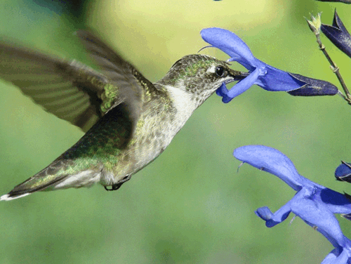
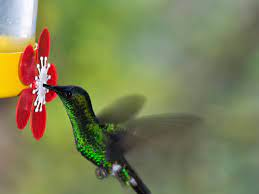
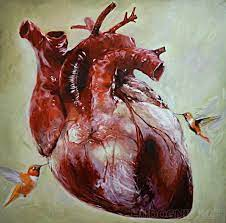
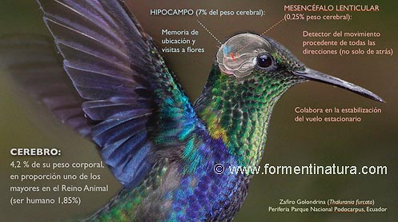
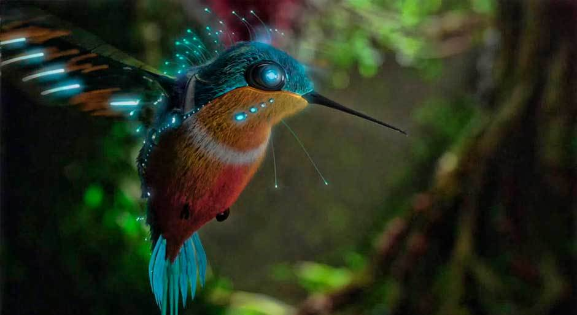
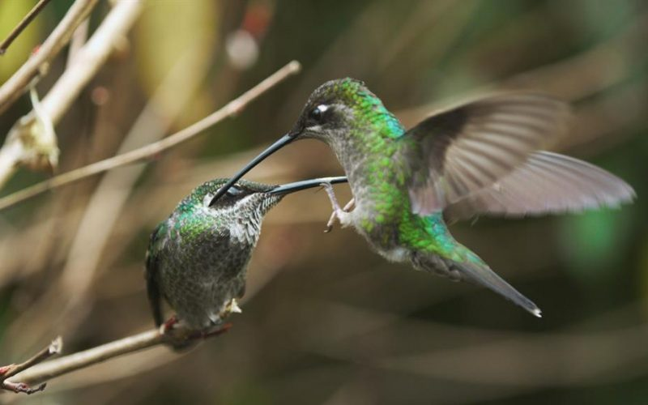

Su vuelo es único: Son las únicas aves que pueden volar hacia atrás y mantener vuelos suspendidos, es decir, quedarse en un solo lugar sin moverse o desplazarse, “como si fueran una mosca”. Los primeros europeos en verlos se refirieron a estos animales como pájaros mosca. Cuando se desplazan hacia adelante pueden alcanzar una velocidad de 70 kilómetros por hora. Algunas especies de machos (para atraer a las hembras) realizan algunos despliegues “increíbles”, donde suben y luego se dejan caer en picada a velocidades de hasta 120 o 130 kilómetros por hora. El ave que tiene la mayor velocidad es el halcón peregrino, alcanza hasta 120 kilómetros por hora. “Por eso es tan asombroso que un ave tan chiquita pueda alcanzar una velocidad tan grande con una caída en picada”.

Toman su propio peso en néctar: Un colibrí puede beber su peso en néctar en un día. “Si pesan 5 gramos, consumen 5 mililitros de néctar”. Eso requiere visitar muchísimas flores porque cada una tiene una cantidad de néctar muy pequeña. “Por eso andan muy activos moviéndose de un lugar a otro, visitando varias flores para tener todo el alimento que necesitan consumir, por la cantidad de energía que requieren para sobrevivir”.

Tienen un corazón enorme: “Su corazón es mucho más grande de lo que esperaríamos para un animal de ese tamaño”. Esto se debe a que realizan una actividad muy grande y por eso tienen una necesidad de oxígeno. “Requieren bombear la sangre con mayor rapidez y para eso tienen este órgano más grande que es más fuerte”.

Su cerebro es más grande que cualquier animal de su tamaño: Su cerebro es casi el doble de lo que se espera de un animal de su tamaño. Esto sugiere que tienen capacidades cerebrales, “no sabemos si cognitivas y hasta qué nivel, pero tienen capacidades en su cerebro mayores de lo que esperaríamos para un animal tan pequeño”. Tienen una memoria prodigiosa, pueden reconocer una ruta de migración desde Alaska hasta México y recordarla. También pueden recordar las diferentes flores que han detectado y reconocer dónde están las plantas con flores nuevas, las que van a florear y las visitan según producen su néctar.
Viven mucho tiempo para ser tan pequeños: En general los animales pequeños viven poco tiempo, por eso es muy sorprendente que un colibrí, que son las aves más pequeñas del mundo, pueda vivir tanto tiempo. Se ha publicado que el récord es de 12 años, pero de acuerdo a las investigaciones de Jorge Schondube se ha detectado que pueden vivir hasta 18 años.

Los colibríes pueden ver más colores que los seres humanos Gracias a su visión tetracromática, estas aves tienen la capacidad de ver colores que los seres humanos no son capaces de percibir. Esto es así por una desviación evolutiva, según un estudio conducido por Mary Stoddard, bióloga de la Nacional Academy of Sciences.

Son pájaros agresivos con otras especies aladas A pesar de su tamaño, que no supera los 10 centímetros de alto, los colibríes son famosos entre los biólogos por ser aves agresivas. Se les ha visto atacar a los arrendajos, a cuervos e incluso a halcones, que muchas veces les triplican el tamaño y la fuerza. Esto sucede generalmente cuando otros pájaros infringen su territorio, que defienden a capa y espada con su pico, que generalmente mide lo mismo que la totalidad de su cuerpo.